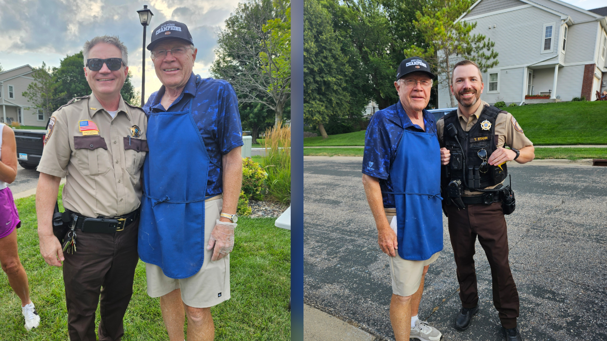

Carver County Sheriff's Office
Denny supports the current model of contracting services with the carver County Sheriff's Office. Sheriff Kamerud and Lieutenant Stahn are huge advocates for the safety of all citizens of Chanhassen. Their record reflects this advocacy.